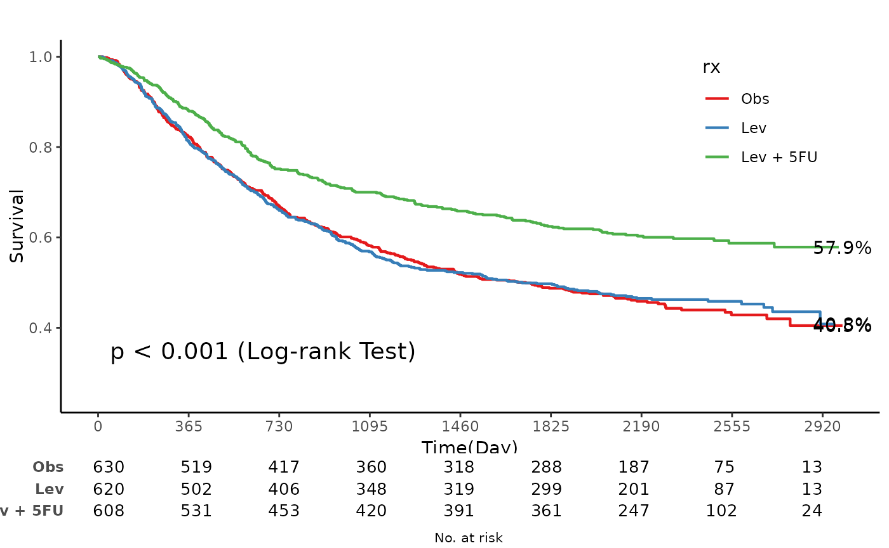
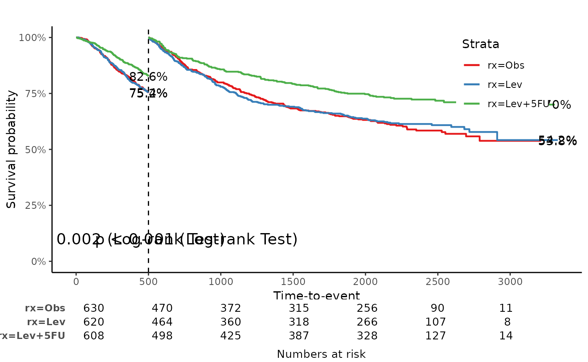
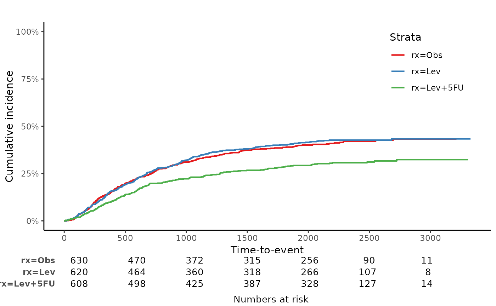
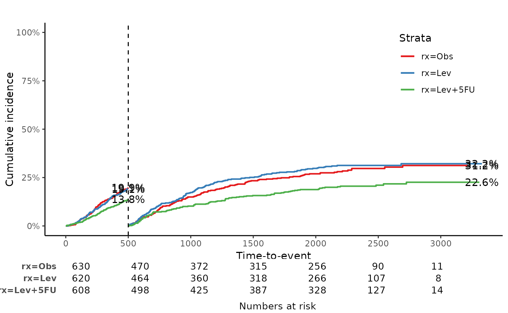
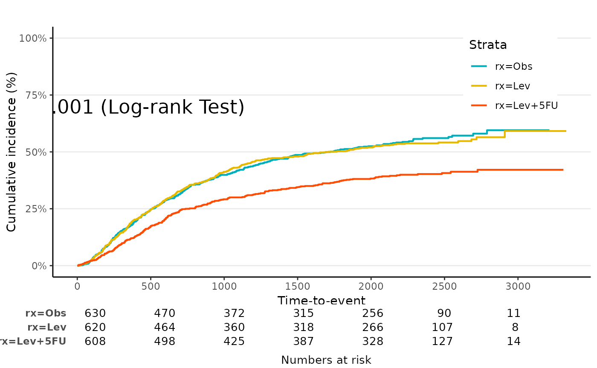
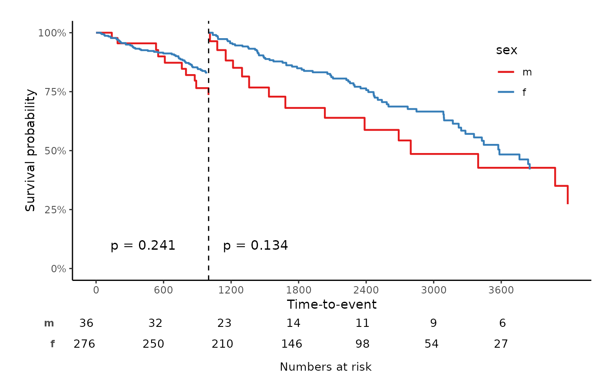

Install
install.packages("devtools")
library(devtools)
install_github("jinseob2kim/jskm")
library(jskm)Example
Survival probability
# Load dataset
library(survival)
data(colon)
#> Warning in data(colon): data set 'colon' not found
fit <- survfit(Surv(time, status) ~ rx, data = colon)
# Plot the data
jskm(fit)
jskm(fit,
table = T, pval = T, label.nrisk = "No. at risk", size.label.nrisk = 8,
xlabs = "Time(Day)", ylabs = "Survival", ystratalabs = c("Obs", "Lev", "Lev + 5FU"), ystrataname = "rx",
marks = F, timeby = 365, xlims = c(0, 3000), ylims = c(0.25, 1), showpercent = T
)
#> Warning: Removed 16 rows containing missing values (`geom_step()`).
#> Warning: Removed 3 rows containing missing values (`geom_text()`).
Cumulative incidence: 1- Survival probability
jskm(fit, ci = T, cumhaz = T, mark = F, ylab = "Cumulative incidence (%)", surv.scale = "percent", pval = T, pval.size = 6, pval.coord = c(300, 0.7))
Landmark analysis
jskm(fit, mark = F, surv.scale = "percent", pval = T, table = T, cut.landmark = 500, showpercent = T)
Competing risk analysis
status2 variable: 0 - censoring, 1 - event, 2 -
competing risk
## Make competing risk variable, Not real
colon$status2 <- colon$status
colon$status2[1:400] <- 2
colon$status2 <- factor(colon$status2)
fit2 <- survfit(Surv(time, status2) ~ rx, data = colon)
jskm(fit2, mark = F, surv.scale = "percent", table = T, status.cmprsk = "1")
jskm(fit2, mark = F, surv.scale = "percent", table = T, status.cmprsk = "1", showpercent = T, cut.landmark = 500)
Theme Jama
jskm(fit, theme = "jama", cumhaz = T, table = T, mark = F, ylab = "Cumulative incidence (%)", surv.scale = "percent", pval = T, pval.size = 6, pval.coord = c(300, 0.7))
Theme Nejmoa
jskm(fit, theme = "nejm", nejm.infigure.ratiow = 0.6, nejm.infigure.ratioh = 0.4, nejm.infigure.ylim = c(0, 0.7), cumhaz = T, table = T, mark = F, ylab = "Cumulative incidence (%)", surv.scale = "percent", pval = T, pval.size = 6, pval.coord = c(300, 0.7))
Weighted Kaplan-Meier plot - svykm.object in
survey package
library(survey)
#> Loading required package: grid
#> Loading required package: Matrix
#>
#> Attaching package: 'survey'
#> The following object is masked from 'package:graphics':
#>
#> dotchart
data(pbc, package = "survival")
pbc$randomized <- with(pbc, !is.na(trt) & trt > 0)
biasmodel <- glm(randomized ~ age * edema, data = pbc)
pbc$randprob <- fitted(biasmodel)
dpbc <- svydesign(id = ~1, prob = ~randprob, strata = ~edema, data = subset(pbc, randomized))
s1 <- svykm(Surv(time, status > 0) ~ 1, design = dpbc)
s2 <- svykm(Surv(time, status > 0) ~ sex, design = dpbc)
svyjskm(s1)svyjskm(s2)
svyjskm(s2, cumhaz = T, ylab = "Cumulative incidence(%)", surv.scale = "percent", showpercent = T)
If you want to get confidence interval, you should
apply se = T option to svykm object.
s3 <- svykm(Surv(time, status > 0) ~ sex, design = dpbc, se = T)
svyjskm(s3)
svyjskm(s3, ci = F, showpercent = T)svyjskm(s3, ci = F, surv.scale = "percent", pval = T, table = T, cut.landmark = 1000)